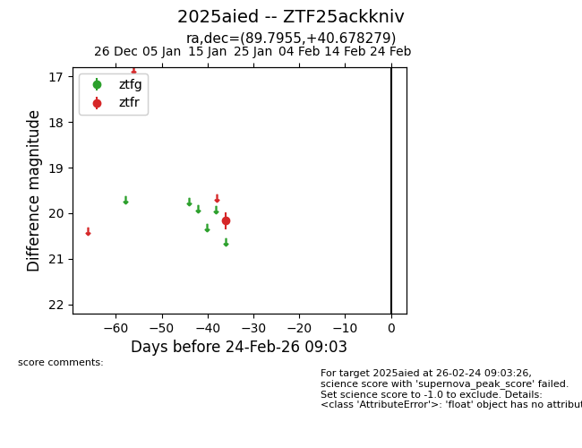
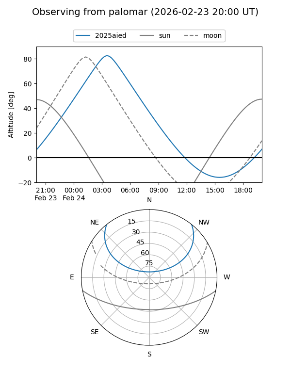

2025aied
Target 2025aied at 2026-01-19 07:55
Aliases and brokers:
FINK: link
Lasair: link
ALeRCE: link
TNS: link
YSE: link
alt names
ZTF25ackkniv (ztf,fink_ztf)
2025aied (tns,yse)
Coordinates:
equatorial (ra, dec) = 89.7955,+40.67828
equatorial (HMS+DMS) = 05:59:10.91,+40:40:41.80
galactic (l, b) = (171.2291,+8.31699)
Flags:
Photometry:
last ztfr=20.17
1 ztfr detections
Lightcurve

Visibility


Additional plots